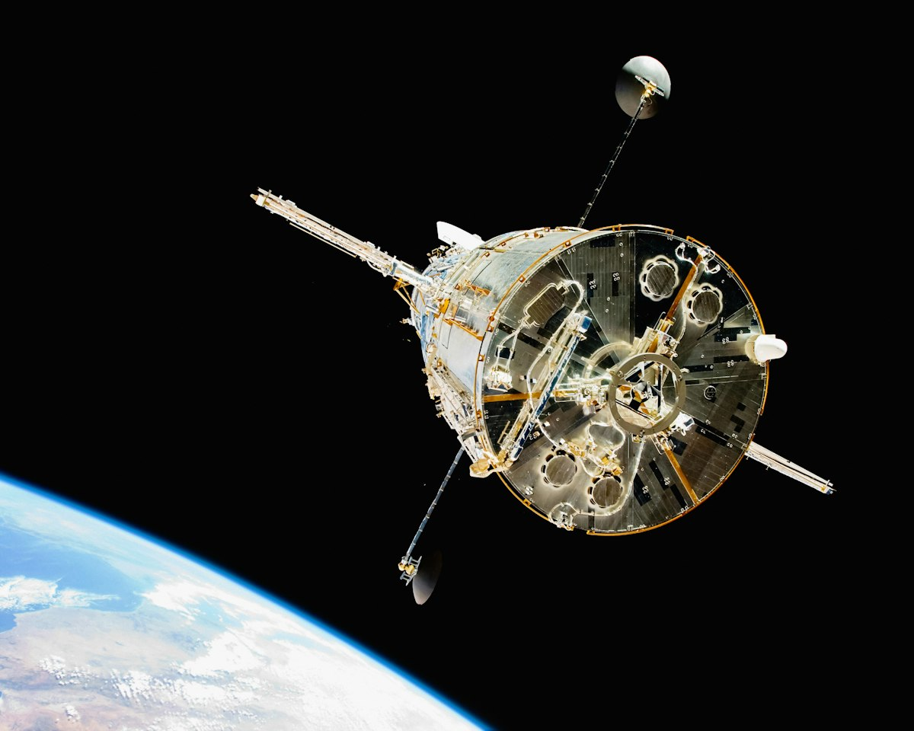

NASA Confronts Orbital Decay to Prolong Hubble Space Telescope Operations
Atmospheric drag and failing gyroscopes leave mission planners with diminishing mechanical options.

On November 4, 2026, reports confirmed that NASA flight engineers are escalating contingency plans to arrest the orbital decline of the Hubble Space Telescope. Atmospheric drag in low Earth orbit has steadily stripped energy from the platform since the final servicing mission in 2009. The core engineering dilemma is structural rather than budgetary. Without an active propulsion system or a certified commercial capture craft, Hubble faces an inevitable aerodynamic breakup that no software patch can prevent.
The observatory cannot preserve its current orbit indefinitely through passive pointing maneuvers. Solar activity heats the upper atmosphere, which expands outward and increases the drag coefficient on the spacecraft's cylindrical hull. Every orbit bleeds altitude, pulling the observatory toward denser gas where stabilization requires more torque from hardware that has long exceeded its design life. Ground teams must intervene before control authority degrades beyond recovery.
The Physical Mechanics of Atmospheric Drag
Hubble circles our planet without an onboard thruster array. When flight controllers adjust its attitude, they rely entirely on internal reaction wheels and magnetic torquers that push against the geomagnetic field. These instruments alter orientation, but they cannot generate forward thrust to alter orbital energy. As tenuous air molecules collide with the large solar arrays, the satellite loses forward velocity in small increments.
Telemetry monitors reveal that solar cycle peaks accelerate this downward drift. When ultraviolet flux from the sun expands the upper thermosphere, Hubble ploughs through higher particle densities than expected. The drag strips several kilometers of altitude each year during active solar phases. Engineers monitor the rate of altitude loss constantly because a lower altitude decreases the communication window with tracking stations.
The Failure Modes of Mechanical Stabilization
Pointing stability represents the second major bottleneck for Hubble. Fine guidance sensors require at least one operational mechanical gyroscope to orient the telescope toward scientific targets with milliarcsecond precision. These spinning wheels rely on microscopic bearings suspended in pressurized gas, a mechanical setup vulnerable to friction and motor wear over decades of operation. When a gyroscope drifts out of calibration, the flight computer flags an unrecoverable fault.
Ground controllers have already transitioned the craft into an austere pointing mode that operates on fewer active units. This operational profile preserves the remaining hardware by powering down redundant wheels during routine transits. However, this configuration limits slewing speed across targets and restricts the accessible field of view. An observatory that takes twice as long to acquire a star field conducts half as many observations.
Gravity does not negotiate.
Evaluating Commercial Capture Concepts
Aerospace contractors have proposed docking autonomous tugs to Hubble's rear mounting ring to boost its altitude. In theory, an uncrewed spacecraft could dock with the flight latch mechanism installed during the shuttle era. Such an encounter would supply the velocity increment needed to raise the perigee by tens of kilometers, buying decades of science operations without rebuilding the science payload.
The physics of autonomous docking at high orbital speeds introduces severe operational hazards. Hubble lacks a modern standardized docking ring, meaning an approaching tug must grapple heritage structural latches designed for human hands. A single thruster plume from an approaching craft could contaminate the sensitive secondary mirror or burn the fragile multilayer insulation foil. Mission planners recognize that an imperfect rendezvous attempt could induce an unrecoverable tumble.
The Strongest Case for Early Controlled Deorbit
The strongest counter-argument against rescue efforts prioritizes ground safety over legacy astronomy. An uncontrolled descent of an observatory weighing over ten metric tons threatens inhabited terrain beneath its orbital inclination. Heavy internal structures, including the primary mirror assembly and titanium support rings, will survive atmospheric heating and strike the ocean or dry land at terminal velocity.
Advocates of controlled disposal argue that NASA should expend remaining attitude control propellant solely on targeted reentry burns. By directing the spacecraft into an uninhabited stretch of the South Pacific Ocean, operators eliminate all threat to civilian infrastructure. Proponents of this view maintain that prolonging science operations by three years is not worth the liability of an unguided descent.
What Telemetry Does Not Reveal to Ground Controllers
Flight controllers cannot inspect the physical condition of the telescope's exterior skin directly. Telemetry logs report temperatures, voltages, and motor speeds, but they cannot show structural fatigue in the berthing pins or degradation of the outer aluminized mylar blankets. Decades of micro-meteorite impacts and atomic oxygen bombardment have likely eroded surfaces that engineers must trust during any mechanical capture operation.
Furthermore, internal fluid loops within aging instruments show persistent sensor anomalies that mimic sensor failure. Ground analysts cannot confirm whether certain thermal loops are physically leaking or merely reporting corrupted resistance numbers from aged wiring. Making high-stakes intervention choices with imperfect sensor data forces planners to rely on probabilistic failure models rather than direct physical confirmation.
The Practical Consequence for Ultraviolet Astronomy
If orbital degradation forces Hubble out of service, modern astronomy loses its primary high-resolution ultraviolet window on the cosmos. Modern space observatories focus primarily on infrared wavelengths to study distant, redshifted galaxies. Neither ground telescopes nor newer infrared observatories can substitute for Hubble's short-wavelength capabilities because Earth's ozone layer absorbs ultraviolet photons entirely.
Should mission operators fail to secure a reliable reboost solution, researchers studying stellar nurseries, planetary atmospheres, and accretion disks will face an indefinite data blackout. Ground astronomers will retain vast digital archives from thirty-six years of observations, but novel spectroscopic investigations of nearby astrophysical phenomena will stop. Flight directors must decide whether the rewards of an unproven commercial docking mission justify risking the premature loss of the observatory.